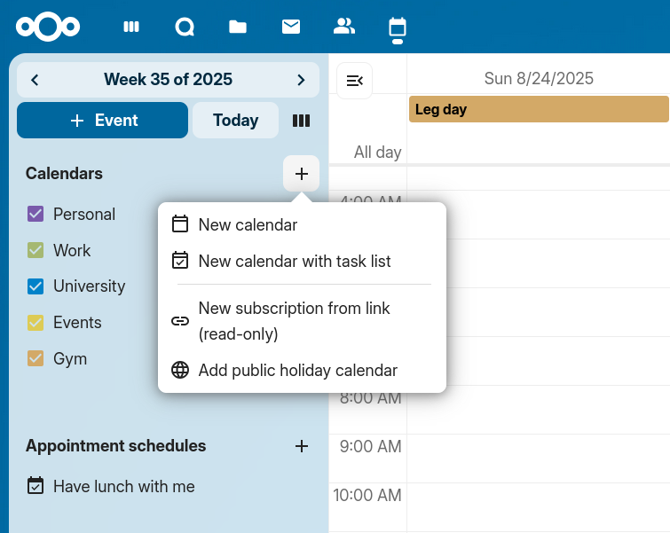
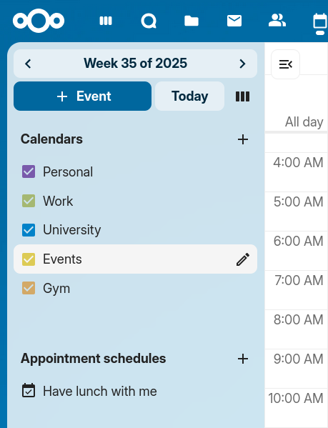
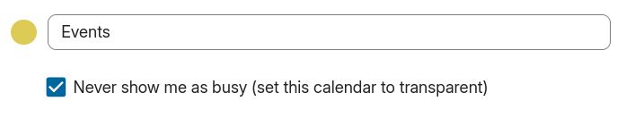
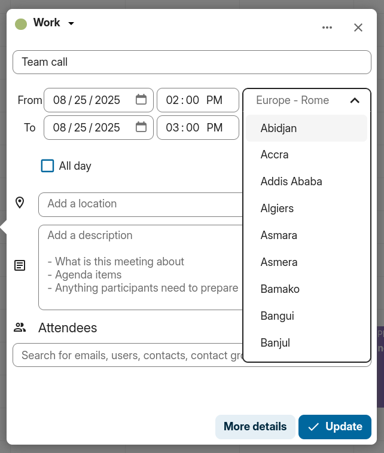
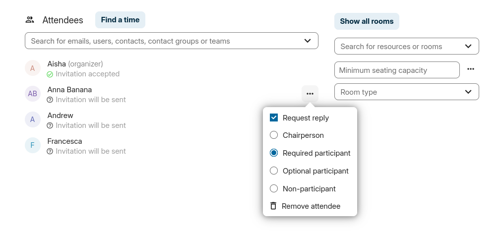
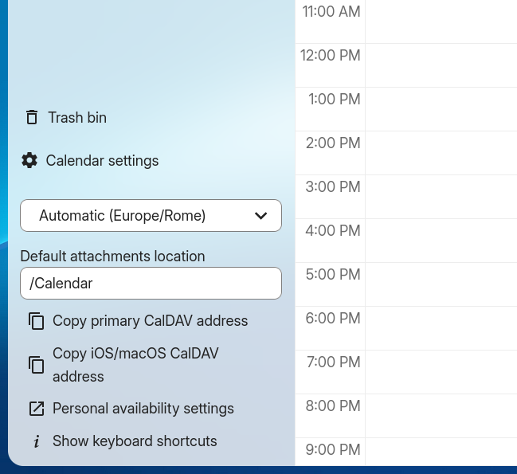
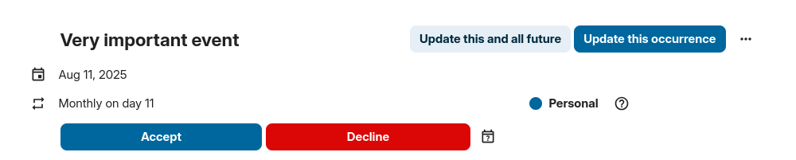
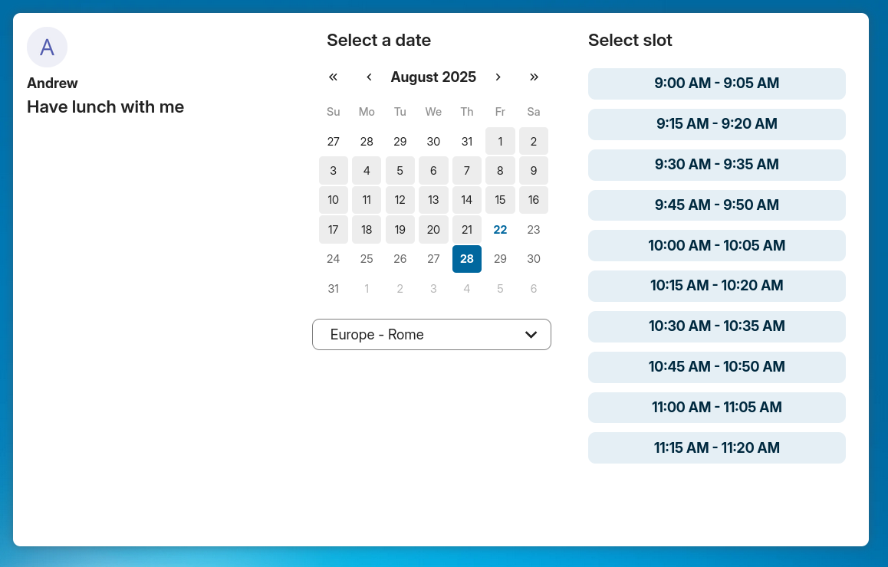

Programėlės „Kalendorius“ naudojimas
Pastaba
„Kalendorius“ programėlė įdiegiama kartu su „Nextcloud Hub“ pagal numatytuosius nustatymus, tačiau ją galima išjungti. Dėl jos kreipkitės į administratorių.
„Nextcloud“ kalendoriaus programėlė veikia panašiai kaip kitos kalendorių programėlės, su kuriomis galite sinchronizuoti savo „Nextcloud“ kalendorius bei įvykius.
Pirmą kartą atidarius „Kalendoriaus“ programėlę, jums bus sukurtas numatytasis pirmasis kalendorius.

Jūsų kalendorių tvarkymas
Sukurti naują kalendorių
Jei ketinate susikurti naują kalendorių neperkeldami jokių senų duomenų iš ankstesniojo, geriausia išeitis – sukurti naują kalendorių.
{kind=link}

Kairiojoje šoninėje juostoje spustelėkite „+ Naujas kalendorius“.
Įveskite naujo kalendoriaus pavadinimą, pvz., „Darbas“, „Namai“ arba „Rinkodaros planavimas“.
Paspaudus varnelę, sukuriamas naujas kalendorius, kurį galima sinchronizuoti įvairiuose įrenginiuose, pildyti naujais įvykiais bei bendrinti su draugais ir kolegomis.

Importuoti kalendorių
Jei norite perkelti savo kalendorių ir jame esančius įvykius į savo „Nextcloud“ egzempliorių, geriausias būdas tai padaryti – importavimas.

Click on the Calendar settings icon.
Spustelėję „Importuoti kalendorių“, esantį skyriuje „Bendra“, galite pasirinkti vieną ar kelis kalendoriaus failus iš savo vietinio įrenginio ir juos įkelti.
Pasirinkite „Kalendorius, į kurį importuoti“.
Įkėlimas gali užtrukti – tai priklauso nuo importuojamo kalendoriaus dydžio. Po „Kalendoriaus nustatymai“ pasirodys mėlyna eigos juosta.
Pastaba
„Nextcloud Kalendorius“ programa palaiko tik su „iCalendar“ suderinamus „.ics“ formato failus, apibrėžtus RFC 5545 standarte.
Importuoti įvykį / Pridėti .ics įvykį
Individual events are often distributed as .ics files (sometimes via a button labelled „iCal“, „Apple Calendar“ or „Outlook“). You can import them into Nextcloud Calendar using the same import flow as a full calendar.
Click on the Calendar settings icon.
After clicking on
Import calendaryou can select one or more.icsfiles from your local device to upload. Single-event files are added to the calendar you select.Pasirinkite „Kalendorius, į kurį importuoti“.
Įkėlimas gali užtrukti – tai priklauso nuo importuojamo kalendoriaus ar renginio dydžio. Po „Kalendoriaus nustatymai“ pasirodys mėlyna eigos juosta.
Pastaba
„Nextcloud Kalendorius“ programa palaiko tik su „iCalendar“ suderinamus „.ics“ formato failus, apibrėžtus RFC 5545 standarte.
Redaguoti, eksportuoti arba ištrinti kalendorių
Kartais gali prireikti pakeisti anksčiau importuoto ar sukurto kalendoriaus spalvą arba visą pavadinimą. Taip pat gali kilti noras eksportuoti jį į vietinį standųjį diską arba visam laikui ištrinti.
Pastaba
Atminkite, kad kalendoriaus ištrynimas yra negrįžtamas veiksmas. Ištrynus kalendorių, jo neįmanoma atkurti, nebent turite vietinę atsarginę kopiją.

Spustelėkite atitinkamo kalendoriaus „pieštuko“ piktogramą. Pamatysite naują iššokantįjį langą, kuriame galėsite pakeisti kalendoriaus pavadinimą bei spalvą, taip pat rasite mygtukus kalendoriui ištrinti arba eksportuoti.

Kalendoriaus skaidrumas
Galite pažymėti arba atžymėti parinktį „Niekada nerodyti manęs kaip užimto (nustatyti šį kalendorių kaip skaidrų)“ ir taip nuspręsti, ar šio kalendoriaus įvykiai bus įtraukiami į užimtumo (laisvo / užimto laiko) skaičiavimus. Jei ši parinktis pažymėta, jokie šio kalendoriaus įvykiai nebus įtraukiami į skaičiavimus – jūsų laikas visada bus rodomas kaip laisvas, nepaisant konkrečių įvykių nustatymų.

Kalendorių bendrinimas
Savo kalendoriumi galite dalytis su vietiniais vartotojais, grupėmis arba nuotoliniais vartotojais federaciniuose serveriuose.

Kalendoriais galima dalytis suteikiant rašymo arba tik skaitymo teisę. Dalijantis kalendoriumi su rašymo teise, vartotojai, su kuriais jis bendrinamas, galės kurti naujus įvykius, taip pat redaguoti ir šalinti esamus.

Pastaba
Šiuo metu bendrinamų kalendorių negalima priimti ar atmesti. Jei nebenorite matyti kalendoriaus, kuriuo su jumis pasidalijo kitas asmuo, kalendorių sąraše šalia kalendoriaus spustelėkite 3 taškų meniu piktogramą ir pasirinkite „Nebebendrinti su manimi“. Norint atkurti bendrinimą, kalendorių galima bendrinti iš naujo – visai grupei, taip anuliuojant visus ankstesnius bendrinimo atsisakymus, arba konkrečiam vartotojui.
Calendar delegation
Added in version 34.0.0.
In the app settings, you can delegate your calendars to other users so they can manage them for you. You can grant read access if they should only view the calendar, or write access if they should create, edit and delete events.
Calendar delegation also works with other clients that support calendar delegation.
By default, delegatees are not added as attendees of events that they create for a delegator, the delegator remains the organizer of the event. If the event has a Talk conversation attached, both the delegator and the delegatee are moderators of that conversation.
Pastaba
Currently, delegating your account delegates all of your calendars. Delegating individual calendars is not yet supported.
Federacinis kalendorių bendrinimas
Added in version 32.0.0.
Pakeista 33.0.0 versijoje: Bendrinami federaciniai kalendoriai palaiko skaitymo ir rašymo prieigą.
Kalendoriaus bendrinimas su kitame „Nextcloud“ elemente esančiu vartotoju vyksta lygiai taip pat, kaip ir bendrinant su vietiniu vartotoju. Skirtumas tas, kad gavėją nurodant reikia naudoti federacinį vartotojo identifikatorių, kurio formatas yra <username>@<instance> (pvz., alice@cloud.example.com).
Pradedant nuo „Nextcloud 33“, federaciniai bendrinimai palaiko visišką skaitymo ir rašymo prieigą, leidžiančią nuotoliniams vartotojams kurti, redaguoti ir šalinti įvykius bendrinamame kalendoriuje. „Nextcloud 32“ versijoje federaciniai bendrinimai buvo skirti tik skaitymui.
Kalendoriaus skelbimas
Kalendorius galima paskelbti naudojant viešąją nuorodą, kad išoriniai vartotojai galėtų juos peržiūrėti (tik skaitymo režimu). Viešąją nuorodą galite sukurti atidarę kalendoriaus bendrinimo meniu ir spustelėję „+“ šalia parinkties „Bendrinimo nuoroda“. Sukūrę nuorodą, galite ją nukopijuoti į iškarpinę arba išsiųsti el. paštu.
Taip pat yra „ įterpimo kodas “, suteikiantis HTML „iframe“ elementą, skirtą kalendoriui įterpti į viešus puslapius.
Galima bendrinti kelis kalendorius vienu metu, įterpimo nuorodos pabaigoje pridėjus jų unikalius žymenis. Atskirus žymenis rasite kiekvieno kalendoriaus viešosios nuorodos pabaigoje. Visas adresas atrodys taip: https://cloud.example.com/index.php/apps/calendar/embed/<token1>-<token2>-<token3>
Norėdami pakeisti įterptojo kalendoriaus numatytąjį rodinį arba datą, turite nurodyti URL, atrodantį taip: „https://cloud.example.com/index.php/apps/calendar/embed/<token>/<view>/<date>“. Šiame URL turite pakeisti šiuos kintamuosius:
<token>su kalendoriaus žymeniu,<view>su vienu išdayGridMonth,timeGridWeek,timeGridDay,listMonth,listWeek,listDay. Numatytasis rodinys yradayGridMonth, o paprastai naudojamas sąrašas yralistMonth,<date>sudabararba bet kokia data tokiu formatu:<year>-<month>-<day>(pvz.,2019-12-28).
Viešajame puslapyje vartotojai gali gauti kalendoriaus prenumeratos nuorodą ir tiesiogiai eksportuoti visą kalendorių.
Kalendoriaus valdiklis
Savo kalendorius galite įterpti į palaikomas programas (pvz., „Pokalbiai“, „Užrašai“ ir kt.), pasidalydami viešąja nuoroda (kad įterptas kalendorius būtų matomas visiems vartotojams tik peržiūros režimu) arba naudodami vidinę nuorodą (kad jis liktų privatus).
Prenumeruoti kalendorių
„iCal“ kalendorius galite užsiprenumeruoti tiesiogiai „Nextcloud“ aplinkoje. Palaikydami šį sąveikos standartą (RFC 5545), užtikrinome „Nextcloud“ kalendoriaus suderinamumą su „Google Calendar“, „Apple iCloud“ ir daugeliu kitų kalendorių serverių, su kuriais galite keistis kalendoriais – įskaitant ir prenumeratos nuorodas į kalendorius, paskelbtus kitose „Nextcloud“ instancijose (kaip aprašyta anksčiau).
Kairiojoje šoninėje juostoje spustelėkite „+ Naujas kalendorius“
Spustelėkite „+ Nauja prenumerata pagal nuorodą (tik skaitymui)“
Įveskite arba įklijuokite bendrinamo kalendoriaus, kurį norite užsiprenumeruoti, nuorodą.
Baigta. Jūsų kalendoriaus prenumeratos bus reguliariai atnaujinamos.
Pastaba
Prenumeratos pagal numatytuosius nustatymus atnaujinamos kas savaitę. Jūsų administratorius galėjo pakeisti šią nuostatą.
Prenumeruoti švenčių kalendorių
Added in version 4.4: Nextcloud 25 or newer
Galite užsiprenumeruoti tik skaitymui skirtą švenčių kalendorių, kurį teikia „Thunderbird“ <https://www.thunderbird.net/calendar/holidays/>.
Kairiojoje šoninėje juostoje spustelėkite „+ Naujas kalendorius“
Spustelėkite „+ Pridėti švenčių kalendorių“
Raskite savo šalį arba regioną ir spustelėkite „Prenumeruoti“
Renginių valdymas
Sukurti naują įvykį
Įvykius galima sukurti spustelėjus toje srityje, kuriai numatytas įvykis. Dienos ir savaitės kalendoriaus rodiniuose tiesiog spustelėkite, vilkite ir atleiskite žymeklį toje srityje, kurioje vyks įvykis.
Paspaudus gaublio piktogramą, atidaromas laiko juostų pasirinkimo įrankis. Galite pasirinkti skirtingas laiko juostas renginio pradžiai ir pabaigai. Tai ypač naudinga keliaujant.

Norint peržiūrėti mėnesio vaizdą, pakanka vieną kartą spustelėti norimos dienos sritį.

Po to galite įvesti įvykio pavadinimą (pvz., Susitikimas su Linus), pasirinkti kalendorių, kuriame norite išsaugoti įvykį (pvz., Asmeninis, Bendruomenės renginiai), patikrinti ir patikslinti laiką arba nustatyti, kad įvykis vyktų visą dieną. Taip pat galite nurodyti vietą ir pridėti aprašymą.
Jei norite redaguoti išsamius duomenis, pavyzdžiui, Dalyvius ar Priminimus, arba nustatyti įvykį kaip pasikartojantį, spustelėkite mygtuką „Daugiau“, kad atidarytumėte išplėstinį redaktorių.
Pridėti „Pokalbiai“ pokalbį
Į savo įvykį galite įtraukti esamą „Pokalbiai“ pokalbį spustelėję „Pridėti „Pokalbiai“ pokalbį“. Norėdami peržiūrėti esamų „Pokalbiai“ pokalbių sąrašą, įsitikinkite, kad „Pokalbiai“ programėlė yra įjungta. Jei norite sukurti naują „Pokalbiai“ pokalbį, tai galite padaryti tiesiog tame pačiame lange.

Pastaba
Jei vietoj paprasto įvykių redagavimo lango visada norite atidaryti išplėstinį redaktorių, programėlės skiltyje „Nustatymai“ panaikinkite žymą prie parinkties „Įjungti supaprastintą redaktorių“.
Spustelėjus mėlyną mygtuką „Sukurti“, renginys bus galutinai sukurtas.
Redaguoti, dubliuoti arba ištrinti įvykį
Jei norite redaguoti, nukopijuoti ar ištrinti konkretų įvykį, pirmiausia turite jį spustelėti.
Po to galėsite iš naujo nustatyti visą renginio informaciją ir atidaryti išplėstinį redaktorių spustelėję „Daugiau“.
Clicking on the Update button will update the event. To cancel your changes, click the Close button of the popup or advanced editor.
Jei atidarysite išplėstinį rodinį ir spustelėsite trijų taškų meniu šalia įvykio pavadinimo, galėsite eksportuoti įvykį kaip „.ics“ failą arba pašalinti jį iš savo kalendoriaus.

Patarimas
Jei ištrinsite įvykius, jie pateks į jūsų šiukšlinę. Ten galėsite atkurti netyčia ištrintus įvykius.
Pagrindiniame redaktoriuje taip pat galite eksportuoti, dubliuoti arba ištrinti įvykį.

Pakvieskite dalyvius į renginį
Į renginį galite įtraukti dalyvių, kad jie sužinotų apie kvietimą. Jie gaus kvietimą el. paštu ir galės patvirtinti savo dalyvavimą renginyje arba jo atsisakyti. Dalyviais gali būti kiti jūsų „Nextcloud“ elemento vartotojai, adresų knygose esantys kontaktai bei tiesiogiai nurodyti el. pašto adresai. Taip pat galite keisti kiekvieno dalyvio dalyvavimo lygį arba išjungti pranešimus el. paštu konkrečiam dalyviui.
{kind=link}

Pakeista 25.0.0 versijoje: Dalyviams siunčiamų el. laiškų atsakymų nuorodose nebeliko laukelių, skirtų komentarui įrašyti ar papildomiems svečiams į renginį pakviesti.
Patarimas
Į renginį įtraukdami kitus „Nextcloud“ vartotojus kaip dalyvius, galite matyti jų užimtumo informaciją, jei ji prieinama – tai padeda parinkti tinkamiausią renginio laiką. Nustatykite savo darbo valandas, kad kiti žinotų, kada esate laisvi. Informacija apie užimtumą prieinama tik kitiems vartotojams, esantiems tame pačiame „Nextcloud“ elemente.
Dėmesio
Serverio administratoriai turi sukonfigūruoti el. pašto serverį skirtuke „Pagrindiniai nustatymai“, nes šis el. paštas bus naudojamas kvietimams siųsti.
Kvietimo būsenos paaiškinimas (dalyviui):
Renginys užpildytas: Jūs sutikote
Perbraukimas: Jūs atsisakėte
Dryžiai: Preliminarus
Tuščias renginys: dar neatsakėte
Jei esate organizatorius ir visi dalyviai atsisakė dalyvauti, renginys bus tuščias ir pažymėtas įspėjamuoju simboliu.
Dalyvių užimtumo tikrinimas
Į renginį įtraukę dalyvius, galite spustelėti „Rasti laiką“ ir atidaryti „Laisva / Užimta“ langą. Jame matysite, kada kiekvienas dalyvis turi kitų renginių, ir galėsite parinkti laiką, kai visi yra laisvi.

Jūsų užimti laiko tarpai bus rodomi ta pačia spalva kaip ir jūsų asmeniniame kalendoriuje, laikas, kai esate ne biure, bus rodomas pilka spalva, o kitų dalyvių užimtas laikas bus pažymėtas tokia pat spalva, kokia išplėstiniame redaktoriuje rodomas jų avataras.
Renginio laiką galite pasirinkti tiesiogiai kalendoriuje.
Priskirkite patalpas ir išteklius renginiui
Panašiai kaip ir dalyvius, prie savo renginių galite pridėti kambarius bei išteklius. Sistema užtikrins, kad kiekvienas kamabrys ir išteklius būtų rezervuoti be konfliktų. Kai vartotojas pirmą kartą prideda kamabrį ar išteklių prie renginio, rezervacija bus rodoma kaip patvirtinta. Vėlesnių renginių, kurių laikas sutampa, atveju ta pati patalpa ar išteklius bus rodomi kaip atmesti.
Pastaba
Kambarių ir išteklių pati „Nextcloud“ sistema nevaldo, o kalendoriaus programėlė neleidžia jų pridėti ar keisti. Prieš pradedant naudotis ištekliais, administratorius turi įdiegti ir, galbūt, sukonfigūruoti jų valdymo sistemas.
Laisvi kambariai
Added in version 5.0: Nextcloud 30 or newer
Jei jūsų sistemoje įdiegta „Calendar Rooms and Resources“ programėlė, skiltyje „Ištekliai“ dabar rasite „Patalpų užimtumas“. Čia pateikiamas visų esamų kamabarių sąrašas. Kiekvieno kambario užimtumą galite tikrinti panašiai, kaip tikrinamas renginio dalyvių užimtumas - laisvas / užimtas laikas.

Pridėti priedus prie įvykių
Priedus prie savo renginių galite įkelti arba pridėti iš failų.

Pastaba
Priedus galima pridėti kuriant naujus įvykius arba redaguojant esamus. Naujai įkelti failai pagal numatytuosius nustatymus bus išsaugoti kalendoriaus aplanke, esančiame šakniniame kataloge.
You can change the attachment folder by going to Calendar settings and changing default attachments location.
{kind=link}

Nustatyti priminimus
Galite nustatyti priminimus, kad gautumėte pranešimą prieš įvykstant renginiui. Šiuo metu palaikomi šie pranešimų gavimo būdai:
El. pašto pranešimai
„Nextcloud“ pranešimai
You may set reminders at a time relative to the event or at a specific date. If you would like all the events in a calendar to have a default reminder, you can configure that in the settings of that calendar.

Pastaba
Pranešimus gaus tik kalendoriaus savininkas bei asmenys ar grupės, su kuriais kalendorius bendrinamas suteikiant rašymo teises. Jei negaunate pranešimų, nors manote, kad turėtumėte juos gauti, gali būti, kad administratorius šią funkciją išjungė jūsų serveryje.
Pastaba
Jei sinchronizuojate kalendorių su mobiliaisiais įrenginiais ar kitomis trečiųjų šalių programomis, pranešimai gali būti rodomi ir juose.
Pridėti pasikartojimo parinktis
Įvykį galima nustatyti kaip „pasikartojantį“, kad jis vyktų kasdien, kas savaitę, kas mėnesį ar kasmet. Galima nustatyti konkrečias taisykles, nurodančias, kurią savaitės dieną įvykis vyksta, arba taikyti sudėtingesnes taisykles, pavyzdžiui, nustatyti, kad jis vyktų kiekvieno mėnesio ketvirtąjį trečiadienį.
Taip pat galite nustatyti, kada baigiasi pasikartojimas.

Šiukšliadėžė
Jei programoje „Kalendorius“ ištrinsite įvykius, užduotis ar kalendorių, jūsų duomenys dar nebus visiškai prarasti. Vietoj to šie elementai bus perkelti į šiukšlinę, todėl ištrynimo veiksmą galėsite atšaukti. Praėjus numatytajam 30 dienų laikotarpiui (administratorius gali būti pakeitęs šią nuostatą), šie elementai bus ištrinti visam laikui. Taip pat galite patys anksčiau visam laikui ištrinti šiuos elementus.

Mygtukai „Ištuštinti šiukšlinę“ vienu veiksmu pašalins visą šiukšlinės turinį.
Patarimas
Šiukšlinę galima pasiekti tik naudojantis „Kalendorius“ programėle. Jokia susieta programa ar programėlė negalės rodyti jos turinio. Vis dėlto susietose programose ar programėlėse ištrinti įvykiai, užduotys ir kalendoriai taip pat pateks į šiukšlinę.
Automatizuota vartotojo būsena
Kai kalendoriuje suplanuotas įvykis, kurio statusas yra „Užimtas“, jūsų vartotojo būsena automatiškai bus pakeista į „Susitikime“, nebent būsite pasirinkę režimą „Netrukdyti“ arba „Nematomas“. Bet kuriuo metu galite pakeisti šią būseną į savo pasirinktą pranešimą arba nustatyti kalendoriaus įvykių statusą į „Laisvas“. Skaidrūs kalendoriai bus ignoruojami.
Atsakymas į kvietimus
Į kvietimus galite atsakyti tiesiogiai programėlėje. Paspauskite ant renginio ir pasirinkite savo dalyvavimo statusą. Į kvietimą galite atsakyti jį priimdami, atmesdami arba nurodydami, kad dalyvausite tikėtina.

Į kvietimą galite atsakyti ir naudodamiesi išplėstiniu redaktoriumi.
{kind=link}

Pasiekiamumas (darbo valandos)
Bendrąjį užimtumą, nepriklausomai nuo suplanuotų įvykių, galima nustatyti „Nextcloud“ grupės darbo įrankių „groupware“ nuostatose. Šie nustatymai bus atvaizduoti užimtumo peržiūroje, kai „Kalendoriuje“ planuosite susitikimą su kitais žmonėmis. Šiuos duomenis taip pat rodys kai kurios prijungtos programos, pavyzdžiui, „Thunderbird“.

Be įprasto užimtumo grafiko, galite sukonfigūruoti vienkartinius neatvykimo laikotarpius skyriuje „Neatvykimo nustatymai<groupware-absence>“.
Gimtadienių kalendorius
Gimtadienių kalendorius yra automatiškai sukuriamas kalendorius, kuris pats įtraukia gimtadienius iš jūsų kontaktų sąrašo. Vienintelis būdas redaguoti šį kalendorių – nurodyti gimimo datas savo kontaktuose; tiesiogiai redaguoti šio kalendoriaus naudojantis pačia kalendoriaus programėle negalima.
Pastaba
Jei nematote gimtadienių kalendoriaus, gali būti, kad administratorius jį išjungė jūsų serveryje.
Susitikimai
Pradedant „Kalendorius“ 3-ąja versija, programėlė gali sukurti susitikimų laikus, kuriuos gali rezervuoti ne tik kiti „Nextcloud“ vartotojai, bet ir žmonės, neturintys paskyros tame serveryje. Ši funkcija suteikia galimybę tiksliai nurodyti laisvus susitikimų intervalus, todėl nebereikia siuntinėti daugybės el. laiškų derinant susitikimo datą ir laiką.
Šiame skyriuje terminą organizatorius vartosime kalendoriaus savininkui, kuris nustato susitikimų laikus, apibūdinti. Dalyvis – tai asmuo, kuris rezervuoja vieną iš šių laikų.
Susitikimų konfigūracijos kūrimas
Kaip susitikimų organizatorius, atveriate pagrindinę žiniatinklio kalendoriaus sąsają. Kairiojoje šoninėje juostoje rasite susitikimų skiltį, kurioje galėsite atverti langą naujam susitikimui sukurti.

Viena iš pagrindinių kiekvieno susitikimo detalių – pavadinimas, nurodantis susitikimo pobūdį (pvz., „Individualus pokalbis“, kai organizatorius nori pasiūlyti kolegoms asmeninį skambutį), taip pat informacija apie susitikimo vietą ir išsamesnis jo aprašymas.

Susitikimo trukmę galima pasirinkti iš nustatyto iš anksto sąrašo. Toliau galite nustatyti pageidaujamą žingsnį. Žingsnis – tai dažnumas, su kuriuo siūlomi galimi laiko intervalai. Pavyzdžiui, galite turėti vienos valandos trukmės laiko intervalus, tačiau juos siūlyti 30 minučių žingsniais, kad dalyvis galėtų užsisakyti laiką 9:00 val., bet taip pat ir 9:30 val. Papildoma informacija apie vietą ir aprašymas suteikia dalyviams daugiau konteksto. Kiekvienas užsakytas susitikimas bus įrašytas į vieną iš jūsų kalendorių, todėl galite pasirinkti, į kurį iš jų jis turėtų būti įtrauktas. Susitikimai gali būti vieši arba privatūs. Viešus susitikimus galima rasti „Nextcloud“ vartotojo profilio puslapyje. Privatūs susitikimai prieinami tik tiems asmenims, kurie gauna slaptą URL adresą.

Pastaba
Dalyviams bus rodomi tik tie laiko tarpai, kurie nesikerta su esamais įvykiais jūsų kalendoriuose.
Susitikimo organizatorius gali nurodyti, kuriuo savaitės metu paprastai galima rezervuoti laiką. Tai gali būti darbo valandos arba bet koks kitas individualiai pritaikytas tvarkaraštis.

Kai kuriems susitikimams reikia laiko pasiruošti – pavyzdžiui, kai susitinkama tam tikroje vietoje ir iki jos reikia nuvykti. Organizatorius gali nustatyti laiko trukmę, kuri turi likti laisva. Pasirinkimui bus rodomi tik tie laiko tarpai, kurie nesikerta su kitais įvykiais pasiruošimui reikalingu metu. Be to, galima nustatyti laiko tarpą po kiekvieno susitikimo, kuris taip pat turi likti laisvas. Siekiant išvengti susitikimų rezervavimo paskutinę minutę, galima nustatyti, kiek anksčiausiai gali įvykti kitas susitikimas. Nustačius maksimalų galimų susitikimų skaičių per dieną, galima apriboti bendrą dalyvių rezervuojamų susitikimų kiekį.

Sukonfigūruotas susitikimas bus rodomas kairiojoje šoninėje juostoje. Naudodamiesi trijų taškų meniu, galite peržiūrėti susitikimą. Galite nukopijuoti susitikimo nuorodą ir pasidalyti ja su numatomais dalyviais arba leisti jiems rasti viešą susitikimą per jūsų profilio puslapį. Taip pat galite redaguoti arba ištrinti susitikimo konfigūraciją.

Susitikimo rezervavimas
Rezervavimo puslapyje dalyviui rodomas susitikimo pavadinimas, vieta, aprašymas ir trukmė. Pasirinkus konkrečią dieną, pateikiamas galimų laikų sąrašas. Jei tą dieną nėra laisvų laikų, yra per daug konfliktų arba pasiekta maksimali dienos rezervacijų riba, sąrašas gali būti tuščias.
{kind=link}

Norėdami užsiregistruoti, dalyviai turi įvesti vardą ir pavardę bei el. pašto adresą. Jei nori, jie taip pat gali pridėti komentarą.

Sėkmingai atlikus rezervaciją, dalyviui bus parodytas patvirtinimo langas.

Norint patvirtinti, kad dalyvio el. pašto adresas yra galiojantis, jam bus išsiųstas patvirtinimo el. laiškas.

Tik tada, kai dalyvis paspaus el. laiške esančią patvirtinimo nuorodą, susitikimo rezervacija bus priimta ir perduota organizatoriui.

Dalyvis gaus dar vieną el. laišką, patvirtinantį susitikimo detales.

Pastaba
Jei laiko rezervacija nėra patvirtinta, ji vis tiek bus rodoma kaip prieinama. Tuo tarpu tą patį laiką gali užimti kitas vartotojas, anksčiau patvirtinęs savo rezervaciją. Sistema aptiks susikirtimus ir pasiūlys pasirinkti kitą laiką.
Darbas su suplanuotu susitikimu
Atlikus rezervaciją, organizatorius savo kalendoriuje ras įvykį su susitikimo informacija ir dalyviu.

Jei susitikimui įjungta nuostata „Pridėti laiko prieš įvykį“ arba „Pridėti laiko po įvykio“, organizatoriaus kalendoriuje jie bus rodomi kaip atskiri įvykiai.

Kaip ir bet kurio kito renginio, kuriame yra dalyviai, atveju, įvykus pakeitimams ar renginiui neįvykus, dalyviui bus išsiųstas pranešimas el. paštu.
Jei dalyviai nori atšaukti susitikimą, jie turi susisiekti su organizatoriumi, kad šis galėtų atšaukti arba net ištrinti renginį.
Sukurti „Pokalbiai“ kambarį suplanuotiems susitikimams
„Pokalbiai“ kambarį suplanuotam susitikimui galite sukurti tiesiai kalendoriaus programėlėje. Ši parinktis pasiekiama susitikimo kūrimo lange. Pažymėjus šią parinktį, kiekvienam suplanuotam susitikimui bus sugeneruota unikali nuoroda ir išsiųsta kartu su patvirtinimo el. laišku.
Pasiūlymai
Added in version 6.0: Nextcloud 32 or newer
Rasti tinkamą susitikimo laiką dalyvių grupei gali būti sudėtinga. „Kalendorius“ 6-ojoje versijoje įdiegta nauja funkcija, leidžianti vartotojams teikti susitikimo laiko pasiūlymus. Tai reiškia, kad užuot tiesiog rezervavus laiką ar ieškojus laisvų „užimta / laisva“ rodinyje, dalyviai gali balsuoti už kelis pasiūlytus susitikimo laikus. Tuomet organizatorius gali peržiūrėti dalyvių pageidavimus ir pasirinkti tinkamiausią susitikimo laiką.
Pasiūlymų valdymas

Kairiojoje šoninėje juostoje esančiame pasiūlymų sąraše rodomi visi vartotojo sukurti pasiūlymai. Sąraše pateikiamas pasiūlymo pavadinimas, atsakymus pateikusių dalyvių skaičius bei informacija apie tai, ar atsakymus pateikė visi dalyviai.
Vartotojas gali spustelėti trijų taškų meniu šalia pasiūlymo elemento, kad redaguotų, ištrintų arba peržiūrėtų esamą pasiūlymą.
Pasiūlymo rengimas
Norėdamas sukurti naują pasiūlymą, vartotojas gali spustelėti pliuso piktogramą šalia antraštės „Susitikimų pasiūlymai“, esančios pasiūlymų sąrašo viršuje. Atsidarys modalinis langas, kuriame vartotojas galės įvesti visą reikiamą informaciją apie siūlomą susitikimą.

Pasiūlymų redaktoriuje yra keletas pagrindinių laukų, kuriuos vartotojas gali užpildyti ir kurie panašūs į esančius renginių redaktoriuje, pvz., pavadinimas, aprašymas, vieta, trukmė bei dalyvių pasirinkimas. Ši informacija vėliau naudojama dalyviams informuoti apie siūlomą susitikimą ir jo laiką.
Pagrindinis skirtumas – „Siūlomi laikai“ pasirinkimas, leidžiantis vartotojui susitikimui parinkti kelis laiko intervalus. Vartotojas gali pridėti tiek laiko intervalų, kiek nori, o kiekvieną iš jų – prireikus redaguoti arba pašalinti.
Kai vartotojas užpildys visą būtiną informaciją – pavadinimą, trukmę, dalyvių sąrašą – ir pasirinks siūlomus laikus, galės paspausti mygtuką „Kurti“, kad sukurtų pasiūlymą. Taip pasiūlymas bus išsaugotas, o visiems pasirinktiems dalyviams bus išsiųsti pranešimai.
Pasiūlymo redagavimas
Vartotojas gali redaguoti esamą pasiūlymą spustelėjęs trijų taškų meniu šalia pasiūlymo įrašo sąraše ir pasirinkęs „Redaguoti“. Atidaromas tas pats langas, kaip ir kuriant naują pasiūlymą, tačiau jame jau būna užpildyta visa esama informacija.
Atlikęs reikiamus pakeitimus, vartotojas gali spustelėti mygtuką „Atnaujinti“, kad juos išsaugotų. Tai taip pat išsiųs pranešimus visiems dalyviams apie atnaujintą pasiūlymą.
Pasiūlymo eigos peržiūra
Vartotojai gali peržiūrėti pasiūlymo eigą spustelėję atitinkamą įrašą pasiūlymų sąraše arba pasirinkę „Peržiūrėti“ trijų taškų meniu. Taip bus atvertas išsamus pasiūlymo vaizdas su visa informacija bei laiko ir dalyvių matrica, kurioje pateikiami visi pasiūlyti laikai ir dalyvių atsakymai.

Šiame rodinyje vartotojas gali matyti, kurie dalyviai atsakė į pasiūlymą, ir jų pasirinkimus dėl kiekvieno pasiūlyto laiko. Vartotojas taip pat gali matyti bendrą balsų skaičių už kiekvieną pasiūlytą laiką; tai padeda nuspręsti, koks laikas susitikimui yra tinkamiausias.
Peržiūrėjęs dalyvių atsakymus, vartotojas gali pasirinkti populiariausią susitikimo laiką spustelėdamas mygtuką „Sukurti“, esantį datos ir dalyvių matricos apačioje. Tai sukurs naują įvykį vartotojo kalendoriuje ir išsiųs pranešimus visiems dalyviams apie patvirtintą susitikimo laiką.
Pranešimai apie siūlomą susitikimą
Vartotojai gaus el. pašto pranešimus apie įvairius su siūlomu susitikimu susijusius įvykius, įskaitant:
Kai sukuriamas naujas pasiūlymas
Kai pasiūlymas atnaujinamas
Kai pasiūlymas atnaujinamas
Kai bus patvirtintas galutinis susitikimo laikas
Šie pranešimai padeda visiems dalyviams gauti naujausią informaciją ir išlikti įsitraukusiems viso pasiūlymo rengimo proceso metu.
Pranešimų el. laiškuose pateikiama pagrindinė informacija apie siūlomą susitikimą: pavadinimas, aprašymas, vieta, trukmė ir siūlomas laikas. Juose taip pat yra nuoroda į atsakymų puslapį, kuriame dalyviai gali peržiūrėti visą informaciją ir atsakyti dėl siūlomo laiko.
Atsakymas į pasiūlymą susitikti
Dalyviai gali atsakyti į kvietimą į susitikimą spustelėdami nuorodą pranešimo el. laiške. Taip bus atidarytas išsamus siūlomo susitikimo vaizdas, kuriame galima peržiūrėti visus siūlomus laikus bei kitų dalyvių ir savo atsakymus, taip pat nurodyti savo užimtumą ar pasirinkimus kiekvienam siūlomam laikui.

Dalyviai gali nurodyti savo galimybes kiekvienam pasiūlytam laikui, pasirinkdami tinkamą variantą atitinkamoje laiko ir dalyvių matricos eilutėje. Galima rinktis iš trijų variantų: „Taip“, „Ne“ arba „Galbūt“. Pasirinkę variantą, dalyviai gali spustelėti mygtuką „Pateikti“ ir išsaugoti savo atsakymus.